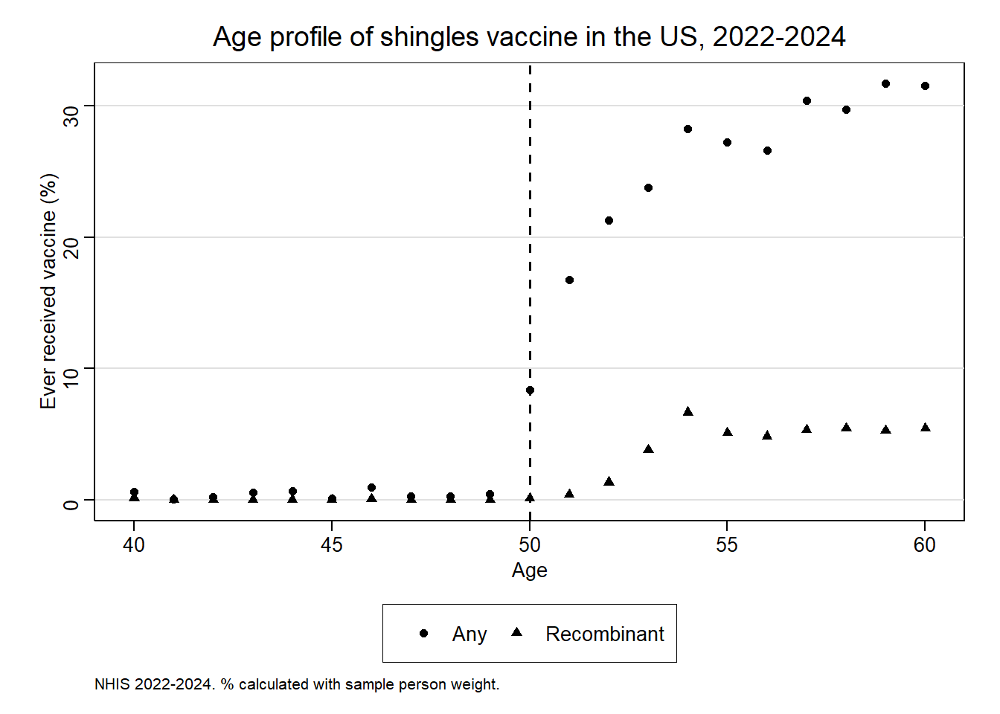

rm(list = ls()) #Clear the environment.Session 2: Loop, Iteration, and Data Analysis
Introduction to Loop and Iteration
- Once you start a data analysis project, you will often need to repeat the same computational task across different groups (or variables) many times. For example, you may need to
- Calculate the average household income for each of 47 prefectures.
- Estimate the effects of vaccination on outpatient visits, emergency department visits, and inpatient admissions (three outcome variables).
- R can handle these repetitive tasks in several different ways:
- for loop
- vectorized operation
Housekeeping
Loop
- As a toy example, suppose we have the following computational task:
- We have a six-dimensional vector (1,2,3,4,5,6).
- For each element of the vector,
- we calculate the third power if the element if less than 4.
- we calculate the second power, otherwise.
- Given the vector (1,2,3,4,5,6), we should get (1,8,27,25,36).
- Define the input vector as \(a\):
a <- 1:6
a[1] 1 2 3 4 5 6- Write a for-loop that implements the task iteratively over the elements of \(a\):
for (x in a) {
# The next line begins our algorithm.
if (x < 4) {
print(x^3)
} else {
print(x^2)
}
# The end of the algorithm.
}[1] 1
[1] 8
[1] 27
[1] 16
[1] 25
[1] 36
Warning
The if-else statement is an important primitive of R (and other) programming. It creates a contingency flow (“execute A if condition is satisfied, but execute B if condition is not satisfied”).
if (condition) { # code A to execute if condition is TRUE. } else { # code B to execute if condition is FALSE. }
- If you want to store the result in another vector \(b\),
b <- numeric(length(a))
for (i in 1:length(a)) {
# The next line begins our algorithm.
if (a[i] < 4) {
b[i] <- a[i]^3
} else {
b[i] <- a[i]^2
}
# The end of the algorithm.
}
b[1] 1 8 27 16 25 36Exercise 2-1
- Solve the following problem:
- For each element \(x\) of a vector (1,2,5,6,9,11,12), calculate
- \(2x + 3\) if \(x < 8\),
- \(0.5x\) if \(8 \leq x < 12\),
- \(3x\), otherwise.
- Store the result in another vector \(d\)
- For each element \(x\) of a vector (1,2,5,6,9,11,12), calculate
WarningModel Answer
c <- c(1,2,5,6,9,11,12)
d <- numeric(length(c))
for (i in seq_along(c)) {
if (c[i] < 8) {
d[i] <- 2*c[i] + 3
} else if (c[i] >= 8 & c[i] < 12) {
d[i] <- 0.5*c[i]
} else {
d[i] <- 3*c[i]
}
}
d[1] 5.0 7.0 13.0 15.0 4.5 5.5 36.0Vectorization and Functional Programming
- A for-loop handles repetitive tasks, as we have seen in the previous toy examples.
- Instead, you can define your computational task as a function. Then you apply the function to each element of an input vector (or list).
- As a toy example, suppose we consider the same computational task again:
- We have a six-dimensional vector (1,2,3,4,5,6).
- For each element of the vector,
- we calculate the third power if the element if less than 4.
- we calculate the second power, otherwise.
- Given the vector (1,2,3,4,5,6), we should get (1,8,27,25,36).
- We use purrr from tidyverse.
- The tidyverse is a collection of R packages for data science.
library(tidyverse)- Define the task as a function:
f1 <- function(x) {
# The next line begins our algorithm.
z <- if (x < 4) {
x^3
} else {
x^2
}
return(z)
}Check the function
f1(x = 3)[1] 27map() puts together the results in a list.
e <- map(1:6, .f = f1)
e[[1]]
[1] 1
[[2]]
[1] 8
[[3]]
[1] 27
[[4]]
[1] 16
[[5]]
[1] 25
[[6]]
[1] 36Exercise 2-2
Repeat Exercise 2-1 using map().
WarningModel Answer
c <- c(1,2,5,6,9,11,12)
h1 <- function(x) {
if (x < 8) {
2*x + 3
} else if (x >= 8 & x < 12) {
0.5*x
} else {
3*x
}
}
# Check the function
h1(5)[1] 13# Obtain the results
c |> map(h1)[[1]]
[1] 5
[[2]]
[1] 7
[[3]]
[1] 13
[[4]]
[1] 15
[[5]]
[1] 4.5
[[6]]
[1] 5.5
[[7]]
[1] 36Managing Research Project in R
- Suppose you work on a research project that investigates how public health agency’s vaccine recommendation affects vaccination rates.
- In the US, people aged 50 and older are recommended to receive two doses of the recombinant zoster (shingles) vaccine to prevent shingles (painful skin rash) from developing.
- You want to examine whether this age-based vaccine recommendation in deed affects vaccination rates.
Create a project directory
- Create a folder “shingles” in your preferred location.
- Set up an R project from RStudio with the “shingles” folder as the project directory.
- Create a “data” sub-folder in “shingles.”
- Create a “code” sub-folder in “shingles.”
- Download (this csv file) and store it in the “data” sub-folder.
Write an analysis script
- R script often begins with a preamble to load packages.
rm(list = ls())
library(tidyverse)
library(ggthemes)
library(data.table)
library(haven)
library(here)
library(tictoc)
library(janitor)
library(fixest)
library(fs)- Check if the working directory is set to the project directory.
getwd()- You can also check the project directory by
here::i_am("files/shingles/shingles.Rproj")here() starts at C:/Users/kensu/Website_Quarto/Introduction-to-R/sessions- Define a function for relative path.
here_rel <- function(...) {
fs::path_rel(here::here(...))
}- Import the csv file.
shingles_vax_usa_2022_2024 <-
read_csv(here_rel("files", "shingles", "data", "shingles_vax_usa_2022_2024.csv"))Rows: 176 Columns: 3
── Column specification ────────────────────────────────────────────────────────
Delimiter: ","
chr (1): type
dbl (2): age, percent
ℹ Use `spec()` to retrieve the full column specification for this data.
ℹ Specify the column types or set `show_col_types = FALSE` to quiet this message.# For students, the correct code might be
# shingles_vax_usa_2022_2024 <-
# read_csv(here_rel("data", "shingles_vax_usa_2022_2024.csv"))- Make an age-profile of vaccination rates with ggplot2 package.
- Notice that several techniques are used here.
- pipe operator: |> (This operator says “do XXX and then do YYY”)
- dplyr functions: mutate(), filter()
- Also notice that you do not need to type data$variable in tidyverse.
- Notice that several techniques are used here.
shingles_vax_usa_2022_2024 |>
mutate(type = factor(type, levels = c("shotshngev_pct", "shotsgrxev_pct"),
labels = c("Any", "Recombinant"))) |>
filter(age >= 40 & age <= 60) |>
ggplot(aes(x = age, y = percent, shape = type)) +
geom_vline(xintercept = 50, linetype = "dashed") +
geom_point() +
labs(x = "Age", y = "Ever received vaccine (%)",
shape = "",
title = "Age profile of shingles vaccine in the US, 2022-2024",
caption = "NHIS 2022-2024. % calculated with sample person weight.") +
theme_stata(scheme = "s1color")
Exercise 2-3
- Visit IPUMS and create your account with your university email address. You might need to enter a brief description about purpose of use.
- Pick a data set of your interest.
- Pick several variables of your interest. If you are interested in the relationship between variables X and Y, select X and Y in your sample.
- Download the sample. This might take several minutes.
- Create an R project.
- Write an R script to visualize Y against X. To do so, you might need to
- read data documentation carefully,
- aggregate the data at an appropriate level using dplyr functions (mutate(), filter(), group_by(), etc.). If you are not familiar with dplyr functions, ask me or an AI on how to use them.
Central Limit Theorem
Central Limit Theorem (CLT)
Suppose \(\{X_{i}\}_{i=1}^{n}\) are independent and identically distributed (i.i.d.) random variables with finite mean and variance. Let \(\bar{X}=\frac{1}{n}\sum_{i=1}^{n}X_{i}\) denote the sample mean. Then
\[ \sqrt{n}\frac{\bar{X}-E[X_{i}]}{\sqrt{Var[X_{i}]}} \stackrel{a}{\sim} N(0,1) \]
Exercise 2-4
Generate \(S=1000\) random samples of size \(n=100\) from a chi-squared distribution with 4 degree of freedom. Plot the density of \(\sqrt{n}\frac{\bar{X}-E[X_{i}]}{\sqrt{Var[X_{i}]}}\). (Hint: A chi-squared random variable \(X_{i}\) with \(k\) degree of freedom has \(E[X_{i}]=k\) and \(Var[X_{i}]=2k\).)
Using the same random samples, demonstrate what happens to the density when you scale \(\bar{X}\) by \(n^{\frac{1}{4}}\) instead of \(\sqrt{n}\). Namely, plot the density of \(n^{\frac{1}{4}}\frac{\bar{X}-E[X_{i}]}{\sqrt{Var[X_{i}]}}\).
Using the same random samples, demonstrate what happens to the density when you center \(\bar{X}\) by subtracting \(E[X_{i}]-1\) instead of \(E[X_{i}]\)? Namely, plot the density of \(\sqrt{n}\frac{\bar{X}-(E[X_{i}]-1)}{\sqrt{Var[X_{i}]}}\).
WarningModel Answer
rm(list = ls())
set.seed(1233)
S <- 1000
n <- 100
clt <- numeric(S)
for (j in 1:S){
clt[j] <- sqrt(n)*(mean(rchisq(n, df = 4)) - 4)/sqrt(8)
}
### Question 2.(b)
set.seed(1233)
clt_2 <- numeric(S)
for (j in 1:S){
clt_2[j] <- n^(1/4)*(mean(rchisq(n, df = 4)) - 4)/sqrt(8)
}
set.seed(1233)
clt_3 <- numeric(S)
for (j in 1:S){
clt_3[j] <- sqrt(n)*(mean(rchisq(n, df = 4)) - 3)/sqrt(8)
}
#Now we plot all of them together. I overlay the normal distribution.
par(mfrow=c(2,2))
plot(density(clt))
curve(dnorm(x,0,1), add =TRUE, lty =2)
plot(density(clt_2))
curve(dnorm(x,0,1), add =TRUE, lty =2)
plot(density(clt_3))
curve(dnorm(x,0,1), add =TRUE, lty =2)
Exercise 2-5 (Confidence Interval)
- Generate \(S=1000\) random samples of size \(n=100\) from a chi-squared distribution with 4 degree of freedom.
- For each sample, calculate the 95% confidence interval for \(E[X_{i}]\).
- Confirm that the empirical coverage rate (the probability that the CI contains the true mean) is close to 0.95.
- Hint: Start from the fact that
\[ Pr\left(-1.96\leq\sqrt{n}\frac{\bar{X}-E[X_{i}]}{\sqrt{Var[X_{i}]}}\leq1.96\right) \rightarrow 0.95, n \rightarrow \infty \]
WarningModel Answer
rm(list = ls())
set.seed(123)
S <- 1000
n <- 100
avg_X <- numeric(S)
for (s in 1:1000) {
X <- rchisq(n, df = 4) # Draw a random sample of size n from chi-squared dist. with degree of freedom = 4
avg_X[s] <- mean(X)
}
LB = avg_X - 1.96*sqrt(8)/sqrt(n)
UB = avg_X + 1.96*sqrt(8)/sqrt(n)
sum(ifelse(LB <= 4 & UB >= 4, 1, 0))/S[1] 0.953# Note that CLT works for any data-generating distribution (with finite mean and variance)
## N(5,6)
rm(list = ls())
set.seed(1234)
S <- 1000
n <- 100
avg_X <- numeric(S)
for (s in 1:S) {
X <- rnorm(n, 5, 6) # Draw a random sample of size n from normal dist. with mean = 5 and sd = 6
avg_X[s] <- mean(X)
}
LB = avg_X - 1.96*6/sqrt(n)
UB = avg_X + 1.96*6/sqrt(n)
sum(ifelse(LB <= 5 & UB >= 5, 1, 0))/S[1] 0.944## binormial(10, 0.3)
rm(list = ls())
set.seed(1234)
S <- 1000
n <- 100
avg_X <- numeric(S)
for (s in 1:S) {
X <- rbinom(n, 10, 0.3) # Draw a random sample of size n from binomial dist. with size = 10 and success prob = 0.3
avg_X[s] <- mean(X)
}
LB = avg_X - 1.96*sqrt(10*0.3*(1-0.3))/sqrt(n)
UB = avg_X + 1.96*sqrt(10*0.3*(1-0.3))/sqrt(n)
sum(ifelse(LB <= 3 & UB >= 3, 1, 0))/S[1] 0.946